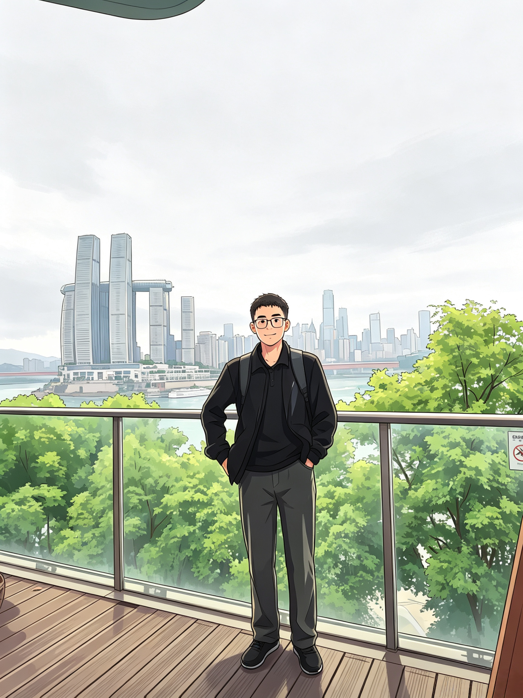
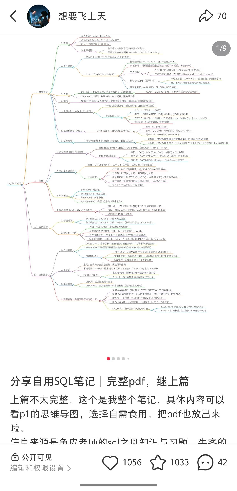

让“实习生”活下来
职场模拟游戏已经上线：玩家需要分析新用户激活漏斗、设计方案、争取资源，并在最终汇报里证明自己不是“只会整理表格的新手村 NPC”。
进入游戏 Demo →Hello There! 欢迎来到我的小小宇宙
经济学硕士在读，正在探索“学生 + X”的各种可能
| A PASSIONATE FOOOOOL | ヾ(≧▽≦*)o。

幽默 · 沉稳 · 执行力 Available PERSONALNow
职场模拟游戏已经上线：玩家需要分析新用户激活漏斗、设计方案、争取资源，并在最终汇报里证明自己不是“只会整理表格的新手村 NPC”。
进入游戏 Demo →把学习过程整理成可复用的完整 PDF，并发布到小红书；笔记获得 2000+ 赞藏。,
做笔记的原则是：利己利他。
目前在学习网球。面对来球越害怕，反而越要迎上去
Little things →About Me
我是一个经济学背景的探索型选手，本科保研至西南财经大学，在读经济学硕士。
比起把自己限定成某一种岗位，我更想持续靠近那些需要理解业务、拆解问题、组织信息、推动事情发生的工作。
我做过 B 端产品运营、数据运营、以及电商直播相关。也在用 AI 工具和个人项目给自己加一点“创造力 Buff”。我的风格大概是：沉稳推进，偶尔幽默，慢一点，但不摆烂。
Playground

把自己学 SQL时的零散知识重新梳理成一份更容易复习和分享的材料。
SELECT 学习内容, 我的理解
FROM SQL_笔记
WHERE 是否实用 = TRUE;
-- JOIN / GROUP BY / CASE WHEN
-- 窗口函数/ 易错点
Experience
2025.02 — 2025.05
产品运营实习生 · 团餐业务
围绕 B 端团餐业务增长，把经营数据、市场活动、商户画像、设备铺设和产品需求串成可以推进的工作流。
2023.06 — 2023.09
数据运营实习生 · 智能割草机器人
从真实业务问题出发，把北美家庭草坪场景和产品需求整理成研发可以使用的数据与分析材料。
CONTENT & GROWTH
内容运营 · 投放复盘 · 私域引流
既做过自然流直播的内容与竞品复盘，也做过跨平台投放和小红书账号从 0 到 1；比起“追热点”，我更关心流量为什么来、用户为什么留下。
Toolkit
把模糊的问题变成可以推进的下一步。
Little Things
喜欢郭靖和黄蓉。一个踏实，一个灵动；一个笨拙但坚定，一个聪明又鲜活。希望自己也能长期主义，但不要丢掉一点古怪和好玩。
喜欢有律动感的表达。整理思绪，调动情绪
正在学习网球。面对来球越害怕越是要迎上去打。
Contact
主线切换为实习ing，欢迎聊聊。可实习 6 个月，可立即到岗，城市都可以。